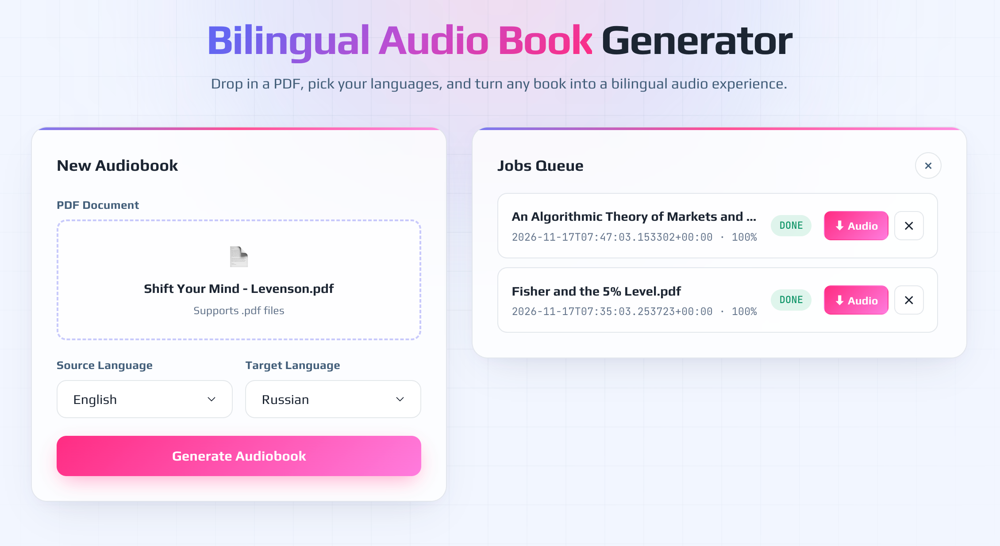

Генератор двуязычных аудиокниг для изучения английского языка

Это приложение забирает PDF-файл с книгой и отдаёт аудиофайл, начитанный ИИ-диктором. Сначала он читает предложение на оригинальном языке, затем на русском, после чего отдельно даёт переводы самым необычным словам — и так читается вся книга.
Аудиофайл можно скачать на телефон, чтобы слушать в дороге и учиться по пути на работу.
Пример генерации:
Как это работает? Большая языковая модель разбирает текст, выбрасывает мусор (вроде содержания или издательской информации), создаёт переводы, выделяет сложные слова и создаёт сценарий, который потом передаётся на озвучку TTS-модели. В стандартной конфигурации
-
Всё работает на локальных моделях. Можно назначить свои, из коробки
используются такие:
- LLM: Qwen3.6-35B-A3B-UD:Q4-K-M
- TTS: Supertonic-3
- Простой веб-интерфейс: 0 зависимостей, не нужен NPM
- Лёгкое развёртывание через Docker Compose
-
Персистентная очередь задач: прогресс
не теряется, если что-то пойдёт не так или приложение
остановится раньше времени.
- Для реализации очереди используется паттерн PostgreSQL FOR UPDATE SKIP LOCKED.